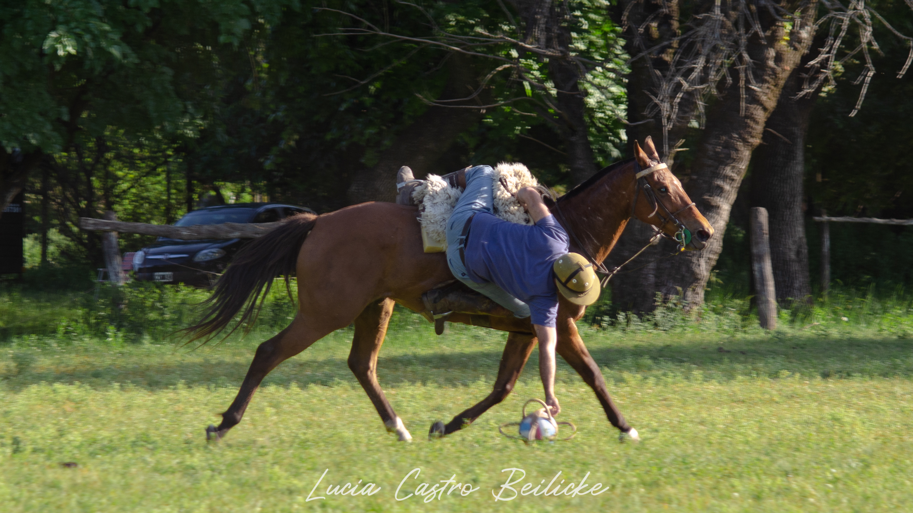

¿QUÉ ES?
es un deporte ecuestre originario de Argentina, que nació de la mano de los gauchos que practicaban este deporte en el campo. Desde la época de la colonia, y durante todo el siglo XIX, el pato era el deporte
más popular para los hombres de a caballo y los del campo en la Provincia de Buenos Aires

PELOTA
El "pato" en sí es una pelota de cuero, con cámara neumática, y posee seis asas; suele ser de color blanco. Su diámetro, de extremo a extremo, es de 40 cm. Su peso máximo es de 1.250 g.

HISTORIA
Originariamente se utilizaba un ave doméstica muerta, generalmente un pato, dentro de una bolsa de cuero con cuatro manijas, y se trataba de un juego brusco y fuerte que daba lugar a encuentros peligrosos.

LUGAR DE ENCUENTRO
Un potrero de entre 180 y 220 metros de largo y entre 80 y 90 metros de ancho

PROHIBICIÓN
Fue prohibido temporalmente, en 1822, en la provincia de Buenos Aires (la cual incluía hasta 1880 a la actual Ciudad Autónoma de Buenos Aires), por Martín Rodríguez, y esta prohibición también fue sostenida
durante el gobierno de Juan Manuel de Rosas

DURACIÓN DEL ENCUENTRO
Hasta 6 períodos de 8 minutos, con descansos de 4 minutos

DEPORTE NACIONAL
Fue declarado oficialmente deporte nacional de Argentina en 1953 por el presidente Juan Domingo Perón a través del decreto 17.468 del 16 de septiembre de 1953. El 31 de mayo de 2017, el pato fue declarado deporte
nacional por la ley 27.368.
EQUIPOS
El juego consiste en 2 equipos de 4 jugadores cada uno. Cada jugador es calificado con "goles de ventaja" de acuerdo a su nivel.

TORNEOS
Se realizan gran cantidad de torneos en el calendario regulado por la Federación Argentina de Pato. El primero del año es el Torneo Nacional de Novicios y el último es el Torneo Abierto Argentino de Pato. Siendo
este el más importante de todos y donde juegan los mejores jugadores del país.